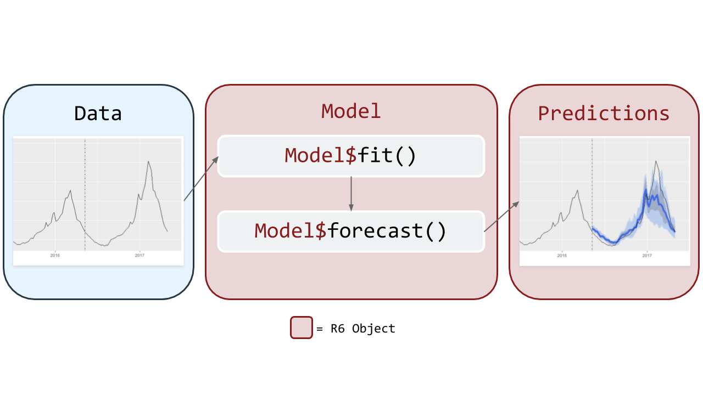
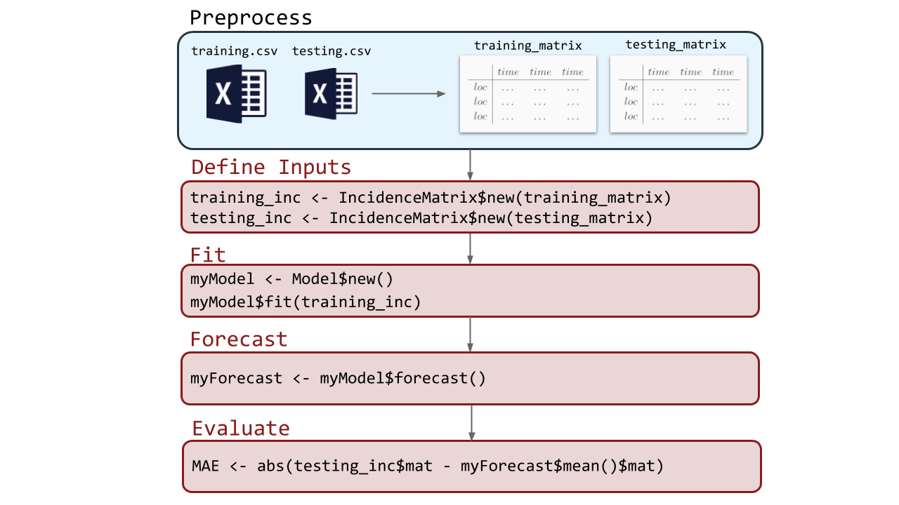
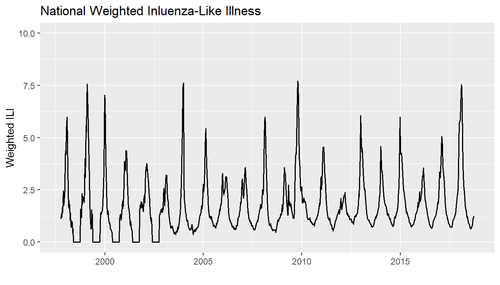
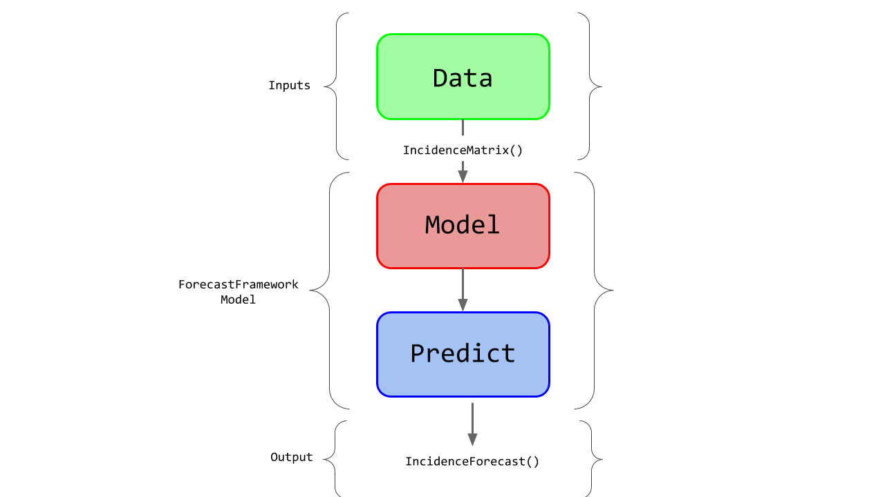
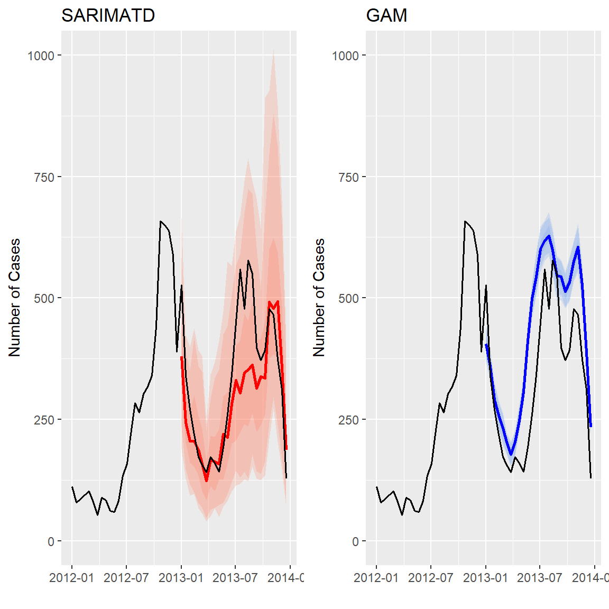
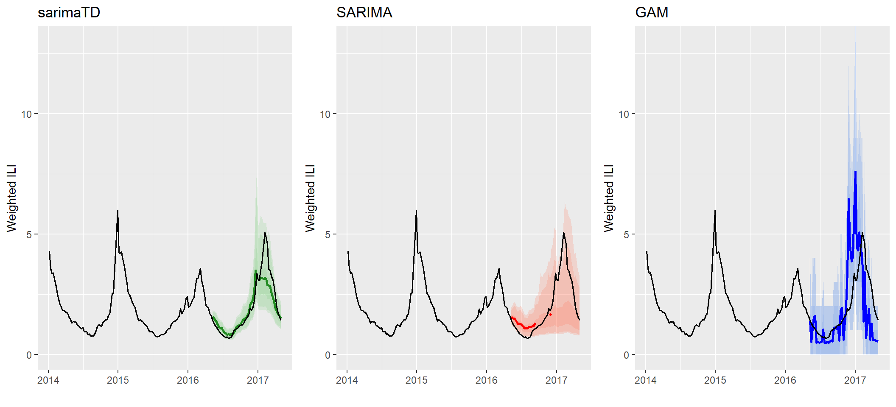

About ForecastFramework
Purpose
ForecastFramework is an object-oriented R package that standardizes forecasting models. The package uses the R6 class implementation to design an object-oriented framework for building forecasting models for spatial time-series data. The central goals of the ForecastFramework package are to enable rapid model development while standardizing and simplifying implementation and performance evaluation.
Usage
ForecastFramework is one of the primary forecast modeling tools used at the Reich Lab at the University of Massachusetts Amherst. As one example, we use it under the hood in generating our real-time dengue forecasts for the Ministry of Public Health in Thailand.
The following diagram illustrates the flow of a ForecastFramework Modeling process:

Creation
ForecastFramework was created by Joshua Kaminsky of the Infectious Disease Dynamics Group at Johns Hopkins University. This demo was created by Katie House.

This work is licensed under a Creative Commons Attribution-NonCommercial 4.0 International License.
Getting Started
Installation of Forecast Framework
ForecastFramework is an open source R package hosted on CRAN and Github.
To install this package, run either of the following commands in your Rstudio console:
install.packages('ForecastFramework')or,
library(devtools)
devtools::install_github('HopkinsIDD/ForecastFramework')Run this to ensure you have all the Dependencies
Run these lines of code before performing the vignette. NOTE: you only need to run this once. This script installs all of the necessary R packages for the rest of the demo.
install.packages(c('R6','devtools','forecast','ggplot2',
'gridExtra','data.table','knitr','kableExtra','RCurl'))Then run these commands:
library(devtools)
devtools::install_github('HopkinsIDD/ForecastFramework')
devtools::install_github('reichlab/sarimaTD')
devtools::install_github("hrbrmstr/cdcfluview")Test your packages are correctly installed with these commands:
library(ForecastFramework)
library(R6)
library(forecast)
library(dplyr)
library(ggplot2)
library(cdcfluview)
library(gridExtra)
library(data.table)
library(knitr)
library(kableExtra)
library(RCurl)
# Function of Source Github Models
source_github <- function(u) {
# read script lines from website and evaluate
script <- getURL(u, ssl.verifypeer = FALSE)
eval(parse(text = script),envir=.GlobalEnv)
}
# Source R6 Files
source_github('https://raw.githubusercontent.com/reichlab/forecast-framework-demos/master/models/ContestModel.R')
source_github('https://raw.githubusercontent.com/reichlab/forecast-framework-demos/master/models/SARIMAModel.R')
source_github('https://raw.githubusercontent.com/reichlab/forecast-framework-demos/master/models/GamModel.R')
source_github('https://raw.githubusercontent.com/reichlab/forecast-framework-demos/master/models/SARIMATD1Model.R')The ForecastFramework Pipeline
Before creating your own ForecastFramework models, let’s dive deeper into the forecasting process with ForecastFramework.
Below is a very basic example of the ForecastFramework pipeline: preprocessing, defining inputs, fitting, forecasting, and evaluating: 
Each of the subsequent vignettes looks into a part of this process. Note that the preprocesing stage will be included in the Defining Inputs Vignette.
Vignette Overview:
The Data
This section will examines the raw data used in the ForecastFramework models ahead.Defining Inputs: Incidence Matrix
(Beginner Section) This section will define what an Incidence Matrix is, show how to format your data to be used as an Incidence Matrix, and exemplify functions of Incidence Matrices.Fitting and Forecasting: SARIMATD
(Beginner Section)This section will focus on fitting data to a SARIMA model with ForecastFramework.Evaluating Complex Models: SARIMATD, SARIMA, GAM
(Intermediate Section) This section will demonstrate evaluation metrics and techniques by comparing two complex models in ForecastFramework.Creating your own Model: SARIMATD
(Advanced Section) This section will demonstrate how to create your own model with ForecastFramework. NOTE: This section requires object-oriented programming knowledge.
The Data
Demo Data: CDC U.S. Flu Season Data
This demonstration uses influenza surveillance data maintained by the U.S. Centers for Disease Control (CDC). Normally, the data include all 50 US states. For simplicity, this demo only models national data. These data are quickly retrieved with the cdcfluview R package.
One of the measures reported by the CDC for quantifying respiratory illness burden in a population is weighted influenza-like illness (wILI). This is a metric defined as the estimated percentage of all out-patient doctors office visits due to patients who present with “influenza-like illness”, e.g. a fever, a cough and/or sore throat. This wILI percentage, at the national and regional levels, is calculated by taking weighted averages of state-level activty, with weights based on state population.
Raw Data
These data include many attributes, but we will focus on: region,year,week,weighted_ili,week_start. Note that weighted_ili is the wILI measure reported for that specific year and week.
library(cdcfluview)
library(dplyr)
dat <- ilinet(region = "National")
dat <- dat %>%
select('region','year','week','weighted_ili', 'week_start')
print(head(dat,6))## # A tibble: 6 x 5
## region year week weighted_ili week_start
## <chr> <int> <int> <dbl> <date>
## 1 National 1997 40 1.10 1997-10-06
## 2 National 1997 41 1.20 1997-10-13
## 3 National 1997 42 1.38 1997-10-20
## 4 National 1997 43 1.20 1997-10-27
## 5 National 1997 44 1.66 1997-11-03
## 6 National 1997 45 1.41 1997-11-10Time Series
A time series of the raw data looks like the following:
library(ggplot2)
dat$date_sick <- as.Date(strptime(dat$week_start,"%m/%d/%Y")) # convert to date
plot <- ggplot() +
geom_line(mapping = aes(x = week_start, y = weighted_ili),
size=0.7,
data = dat) +
xlab("") + ylab("Weighted ILI") +
coord_cartesian(ylim = c(0, 10)) +
ggtitle("National Weighted Inluenza-Like Illness")
print(plot)
Defining Inputs Incidence Matrix
What is an IncidenceMatrix?
ForecastFramework makes it easy to quickly manipulate forecasting data. To do this, create an object from a class called IncidenceMatrix. IncidenceMatrices are the stanard inputs for ForecastFramework models. This vignette describes how to create an IncidenceMatrix and some key fields and methods relating to their usage.
IncidenceMatrix in the ForecastFramework Process

How to create an IncidenceMatrix
- Make sure you import
ForecastFrameworkandR6
library(R6)## Warning: package 'R6' was built under R version 3.5.1library(ForecastFramework)- Create a new matrix with your data
data_matrix <- matrix(1:9,3,3)
print(data_matrix)## [,1] [,2] [,3]
## [1,] 1 4 7
## [2,] 2 5 8
## [3,] 3 6 9- Create a new
IncidenceMatrixobject with your data
data_object <- IncidenceMatrix$new(data_matrix)List of IncidenceMatrix Fields
The IncidenceMatrix class has several fields that can be helpful for data preprocessing.
$matshow data in matrix form$nrownumber of rows$ncolnumber of columns$colDatacolumns headers$rowDatarow names$cellDatalist of cell metadata$cnamesnames of matrix columns$rnamesnames of matrix rows$metaDataany data not part of main matrix
IncidenceMatrix Methods
In object oriented programming, a ‘method’ is a function for a class. In this case, the following methods are functions that are applied to IncidenceMatrix.
$addColumns(n)addncolumns to matrix$addRows(n)addnrows to matrix$diff(n)difference between each column and lagncolumns to the left$lag(n)lag each column byn$head(x,y)showxcolumns/rows from the top (y=1 for columns, 2 for rows)$tail(x,y)showxcolumns/rows from the bottom (y=1 for columns, 2 for rows)$scale(functin(x){})scale the matrix by some function$subset(rows=x,cols=y)take a subset of the matrix byxrows andycolumns
Examples of manipulating an IncidenceMatrix
Let’s apply some of the example functions from above to our data_object.
$mat show data in matrix form:
data_object$mat## [,1] [,2] [,3]
## [1,] 1 4 7
## [2,] 2 5 8
## [3,] 3 6 9$nrow number of rows in the matrix:
data_object$nrow## [1] 3$ncol number of columns in the matrix:
data_object$ncol## [1] 3$colData Edit or the column names:
data_object$colData <- list(1:3) # Initialize how many columns headers
data_object$colData <- list(c("A","B","C"))
data_object$colData## [[1]]
## [1] "A" "B" "C"$addColumns Edit or the column names:
data_object$addColumns(2)
data_object$colData## [[1]]
## [1] "A" "B" "C" NA NAdata_object$mat## [,1] [,2] [,3] [,4] [,5]
## [1,] 1 4 7 NA NA
## [2,] 2 5 8 NA NA
## [3,] 3 6 9 NA NAFitting and Forecasting
Overview
This demonstration focuses on the simplest building block of any large forecasting experiment or study: how to make a forecast from one model at one time point for a single location. ForecastFramework makes it easy to generalize this process to multiple models, multiple time points and multiple locations. However, for starters, we will focus on the anatomy of a single forecast from a single model.
About sarimaTD
Specifically, we will use a variation on standard Seasonal Auto-Regressive Integrated Moving Average models. sarimaTD is an R package created by Evan Ray. sarimaTD stands for SARIMA with Transformations and Seasonal Differencing. sarimaTD is a model composed of a set of wrapper functions that simplify estimating and predicting traditional SARIMA models. These wrapper functions first transform the incidence data to approximate normality, then perform seasonal differencing (if specified), and input the new incidence data to the auto.arima function from the forecast package. These simple transformations have shown improved forecasting performance of SARIMA models for infectious disease incidence by increasing the numerical stability of the model.
Fitting the ForecastFramework sarimaTD Model
1. Import packages
First you must import all the required libraries. Note that ForecastFramework doesn’t requre dplyr or ggplot2, but they will be used to make a figure at the end of the demo.
library(ForecastFramework)
library(R6)
library(forecast)
library(dplyr)
library(ggplot2)
library(cdcfluview)
# Source R6 Files
library(RCurl)
# Function of Source Github Models
source_github <- function(u) {
# read script lines from website and evaluate
script <- getURL(u, ssl.verifypeer = FALSE)
eval(parse(text = script),envir=.GlobalEnv)
}
# Source R6 Files
source_github('https://raw.githubusercontent.com/reichlab/forecast-framework-demos/master/models/ContestModel.R')
source_github('https://raw.githubusercontent.com/reichlab/forecast-framework-demos/master/models/SARIMATD1Model.R')Now it is time to fit your sarimaTD Model! ForecastFramework makes this easy.
2. Create new sarimaTDmodel Class
In this sarimaTD model, forecasts are created by simulating multiple time-series trajectories from models fit using the forecast::auto.arima() function. Therefore, we must define the number of simulations to generate, nsim. We also need to define the seasonal periodicity of our data, or the period parameter. For this forecast, we know the periodicity is 52, because the data is weekly. once we define these parameters, they can be passed into the sarimaTDModel() class generator to create a new sarimaTDmodel class.
nsim <- 10 # Number of SARIMA simulations
sarimaTDmodel <- SARIMATD1Model$new(period = 52, nsim = nsim)3. Import CDC Flu Data
To import the fluview data, use the ilinet() command. The data is then filtered to remove unneeded weeks and years. Then, the data is stored as an IncidenceMatrix. An IncidenceMatrix represents spatial time-series data in a matrix with one row per location and one column per time. To do this, another series of transformations are made. IncidenceMatrix is the preferred input for ForecastFramework Models.
data2 <- ilinet(region = "National")
data2 <- data2 %>% filter( week != 53)
data2 <- data2 %>%
filter( year > 2009 &
year < 2018 &
!(year == 2017 & week > 18))
data2 <- data2 %>%
select('region','year','week','weighted_ili', 'week_start')
# Create a Preprocess Function
preprocess_inc <- function(dat){
dat$time.in.year = dat$week
dat$t = dat$year + dat$week/52
inc = ObservationList$new(dat)
inc$formArray('region','t',val='weighted_ili',
dimData = list(NULL,list('week','year','time.in.year','t')),
metaData = list(t.step = 1/52,max.year.time = 52))
return(inc)
}
# Seperate into Training and Testing Data
training_data <- data2 %>%
filter( ! ((year == 2016 & week >= 19)| (year == 2017 ) ))
testing_data <- data2 %>%
filter((year == 2016 & week >= 19) | (year == 2017 & week <= 18) )
training_inc <- preprocess_inc(training_data)
testing_inc <- preprocess_inc(testing_data)Let’s look at a sample from the new IncidenceMatrix to view the IncidenceMatrix Format:
print(training_inc$mat[,0:10])## 2010.01923076923 2010.03846153846 2010.05769230769 2010.07692307692
## 1.90712 1.86738 1.88072 1.96908
## 2010.09615384615 2010.11538461538 2010.13461538462 2010.15384615385
## 2.11387 2.09695 1.90294 1.96951
## 2010.17307692308 2010.19230769231
## 1.92331 1.89659Notice that the traditional dates have been transformed to fractions of a year.
3. Fit the Model
Typically, different regions would be fit separately and have different forecasts. For the scope of this demo, we are only fitting and forecasting national data.
sarimaTDmodel$fit(training_inc)Forecasting with the ForecastFramework sarimaTD Model
4. Forecasting SARIMA
Before forecasting, you must specify how many periods ahead you would like to forecast. This is defined by the steps parameter. Then, you forecast with the sarimaTDmodel$forecast() method. This model will forecast one year into the future (26 biweeks).
# define how many provinces to model
# this demo only has data for one province: Province 10
steps <- 52 # forecast ahead 30 epiweeksThen, use the built-in $forecast() function to create your forecasts. This creates a new R6 object with your forecasts and many other useful built-in functions. Be sure to check out the Evaluation section for usage of the Forecasting function.
forecast_X <- sarimaTDmodel$forecast(steps = steps)Plotting the Output
5. Formatting the Forecast Output
To view the new forecasting data in matrix form, execute the following command:
forecast_X$data$mat## 1 2 3 4 5 6 7
## National 1.494988 1.434023 1.305924 1.377093 1.277542 1.118989 1.107131
## 8 9 10 11 12 13 14
## National 1.154718 1.075546 0.9737291 1.012862 0.968587 0.9295113 0.7956496
## 15 16 17 18 19 20 21
## National 0.8622301 0.8591591 0.9388838 1.078237 1.289133 1.398952 1.492972
## 22 23 24 25 26 27 28
## National 1.60926 1.751339 1.542025 1.653691 1.66884 1.773896 1.632859
## 29 30 31 32 33 34 35
## National 1.857147 2.038057 2.382388 2.746086 3.745335 4.282143 2.835912
## 36 37 38 39 40 41 42
## National 2.686989 2.657029 2.691704 2.983318 3.318447 3.182371 2.847058
## 43 44 45 46 47 48 49
## National 3.019881 3.161179 2.587937 2.261168 2.166532 2.030118 1.869631
## 50 51 52
## National 1.842289 1.811737 1.579724Lets convert the forecast matrix to a dataframe in R for easy manipulation:
# converting predictions to a dataframe to use dplyr
preds_df <- data.frame(as.table(t(forecast_X$data$mat)))To include the date_sick in the forecast_X$data$mat output, map the forecast to its predicted dates is to create a new data frame with the data from the missing year. Then, we will combine the output in forecast_X$data with the correct biweek dates.
# converting predictions to a dataframe to use dplyr
# import testing dataset which has 2013 data
# add prediction dates to original forecast
preds_df[["date_sick"]] <-as.Date(testing_data$week_start, format = "%d-%m-%Y")Now, we can add the forecast to the preds_df. Notice the $median() and $quantile() functions accompanied with $mat will produce matricies with the prediction medians and quantiles, respectively.
preds_df <- preds_df %>%
mutate(
pred_total_cases = as.vector(forecast_X$median(na.rm=TRUE)$mat),
pred_95_lb = as.vector(forecast_X$quantile(0.025,na.rm=TRUE)$mat),
pred_95_ub = as.vector(forecast_X$quantile(0.975,na.rm=TRUE)$mat),
pred_80_lb = as.vector(forecast_X$quantile(0.05,na.rm=TRUE)$mat),
pred_80_ub = as.vector(forecast_X$quantile(0.95,na.rm=TRUE)$mat),
pred_50_lb = as.vector(forecast_X$quantile(0.25,na.rm=TRUE)$mat),
pred_50_ub = as.vector(forecast_X$quantile(0.75,na.rm=TRUE)$mat)
)
print(head(preds_df,5)) # Print the first 5 rows## Var1 Var2 Freq date_sick pred_total_cases pred_95_lb pred_95_ub
## 1 1 National 1.494988 2016-05-09 1.584742 1.492623 1.738221
## 2 2 National 1.434023 2016-05-16 1.526748 1.372367 1.736432
## 3 3 National 1.305924 2016-05-23 1.443575 1.307798 1.609338
## 4 4 National 1.377093 2016-05-30 1.418816 1.313325 1.604585
## 5 5 National 1.277542 2016-06-06 1.301111 1.182285 1.463765
## pred_80_lb pred_80_ub pred_50_lb pred_50_ub
## 1 1.493310 1.724331 1.521874 1.686489
## 2 1.378031 1.698894 1.452463 1.545781
## 3 1.309672 1.600059 1.326824 1.525930
## 4 1.321713 1.603285 1.382052 1.473694
## 5 1.182317 1.461521 1.243019 1.4160486. Plot the Forecast Output
Finally, you are able to plot your sarimaTD Forecast! Lets use ggplot2 to create a cool plot.
Weighted ILI sarimaTD Forecast
data_X_3years <- data2 %>% filter(year > 2013)
ggplot(data=preds_df, aes(x=date_sick)) +
geom_ribbon(
mapping = aes(ymin = pred_95_lb, ymax = pred_95_ub),
fill = "cornflowerblue",
alpha = 0.2) +
geom_ribbon(
mapping = aes(ymin = pred_80_lb, ymax = pred_80_ub),
fill = "cornflowerblue",
alpha = 0.2) +
geom_ribbon(
mapping = aes(ymin = pred_50_lb, ymax = pred_50_ub),
alpha = 0.2) +
geom_line(
mapping = aes(y = pred_total_cases),
color = "royalblue",
size = 2) +
geom_line(aes(x = week_start, y = weighted_ili),
size=0.7,
data = data_X_3years) +
xlab("") + ylab("Weighted ILI")
Evaluating Multiple Models
Evaluating Multiple Models
This tutorial will demonstrate how to easily compare multiple models on ForecastFramework. One of the best advantages of ForecastFramework is the ability to evaluate many models at once with the same functions.
Preprocessing Data
Import libraries and source models
library(ForecastFramework)
library(R6)
library(forecast)
library(dplyr)
library(ggplot2)
library(cdcfluview)
library(gridExtra)
library(data.table)
library(knitr)
library(kableExtra)
library(RCurl)
# Function of Source Github Models
source_github <- function(u) {
# read script lines from website and evaluate
script <- getURL(u, ssl.verifypeer = FALSE)
eval(parse(text = script),envir=.GlobalEnv)
}
# Source R6 Files
source_github('https://raw.githubusercontent.com/reichlab/forecast-framework-demos/master/models/ContestModel.R')
source_github('https://raw.githubusercontent.com/reichlab/forecast-framework-demos/master/models/SARIMAModel.R')
source_github('https://raw.githubusercontent.com/reichlab/forecast-framework-demos/master/models/GamModel.R')
source_github('https://raw.githubusercontent.com/reichlab/forecast-framework-demos/master/models/SARIMATD1Model.R')Upload data from cdcfluview as dataframes. In this demo, we are only concerned with years between 2010 and 2017. We split training/testing data by excluding the 2016-17 Flu season in the training set.
data <- ilinet(region = "National")
data <- data %>% filter( week != 53)
data <- data %>%
filter( year > 2009 & year < 2018 &
!(year == 2017 & week > 18))
data <- data %>%
select('region','year','week','weighted_ili', 'week_start')
# Seperate into Training and Testing Data
training_data <- data %>%
filter( ! ((year == 2016 & week >= 19)| (year == 2017 ) ))
testing_data <- data %>%
filter((year == 2016 & week >= 19) | (year == 2017 & week <= 18) )A sample of the data we are forecasting.
head(testing_data,5)## # A tibble: 5 x 5
## region year week weighted_ili week_start
## <chr> <int> <int> <dbl> <date>
## 1 National 2016 19 1.39 2016-05-09
## 2 National 2016 20 1.30 2016-05-16
## 3 National 2016 21 1.18 2016-05-23
## 4 National 2016 22 1.14 2016-05-30
## 5 National 2016 23 1.04 2016-06-06Then, preprocess both the training and testing dataframes to become new incidence matrices. This script uses the ObservationList$new() ForecastFramework function to easily convert the dataframe to an IncidenceMatrix. The $formArray() is the second step to complete the IncidenceMatrix.
Note: The time step in this example is 52 weeks; however, there are datasets with other timesteps (e.g. 26 biweeks) that would impact the calculations of t.step, dat$t, and max.year.time values.
# Create a Preprocess Function
# Convert Training and Testing data to incidence matrices
# time.in.year is a requirement for the GAM model
time_step <- 52
preprocess_inc <- function(dat){
dat$time.in.year = dat$week
dat$t = dat$year + dat$week/time_step
inc = ObservationList$new(dat)
inc$formArray('region','t',val='weighted_ili',
dimData = list(NULL,list('week','year','time.in.year','t')),
metaData = list(t.step = 1/time_step, max.year.time = time_step))
return(inc)
}
# Preprocess Data and convert to Inc Mat
training_inc <- preprocess_inc(training_data)
testing_inc <- preprocess_inc(testing_data)Defining Models
This demo will be evaluating the Generalized Additive Model (GAM), SARIMA, and sarimaTD models given different evaluation metrics. The GAM model is based on the model used in published real-time infectious disease forecasting research.
# Defining the Models
nsim <- 1000 # Number of simulations
region_num <- 1 # Only modeling the "National" region
sarimaTD_model <- SARIMATD1Model$new(period = time_step, nsim = nsim)
sarima_model <- SARIMAModel$new(period = time_step, nsim = nsim)
gam_model <- GamModel$new(numProvinces = region_num, nSims = nsim)Fitting Models
Each model is fit with the training data.
# Fit the Models
sarimaTD_model$fit(training_inc)
sarima_model$fit(training_inc)
gam_model$fit(training_inc)Forecasting Models
We are forecasting from the beginning of flu season 2016-17, 52 weeks into the future.
# Forecasting the Models
steps <- 52 # forecast ahead 26 biweeks
forecast_sarimaTD <- sarimaTD_model$forecast(step = steps)
forecast_sarima <- sarima_model$forecast(step = steps)
forecast_gam <- gam_model$forecast(step = steps)Evaluating the Models
Now for the fun part! How did the models perform? This question is easy to answer with ForecastFramework Models.
Important Note: This is not a formal model evaluation or comparison. The goal of this exercise is to demonstrate different ForecastFramework techniques. Although the sarimaTD model appears to perform better than the other models in this example, a more in-depth analysis must be made before any conclusions can be made about model performance.
Side-by-Side Forecasting Timeseries This function creates a time series visualization with the predicted median and quantiles displayed by a specific color. Notice forecast$quantile(0.025)$mat gives a matrix with a 2.5% quantile. Additionally, forecast$mean()$mat gives the mean forecast for that specific time period. Additionally, na.rm=TRUE, removes any NA values in the simulation to calculate the mean.
# Function to create time series with Visualization
visualize_model <- function(forecast, rib_color, main_color){
data_X_3years <- data %>% filter(year > 2013)
preds_df <- data.frame(as.table(t(forecast$data$mat)))
preds_df[["week_start"]] <-as.Date(testing_data$week_start, format = "%Y-%d-%m")
preds_df <- preds_df %>%
mutate(
pred_total_cases = as.vector(forecast$mean(na.rm=TRUE)$mat),
pred_95_lb = as.vector(forecast$quantile(0.025,na.rm=TRUE)$mat),
pred_95_ub = as.vector(forecast$quantile(0.975,na.rm=TRUE)$mat),
pred_80_lb = as.vector(forecast$quantile(0.05,na.rm=TRUE)$mat),
pred_80_ub = as.vector(forecast$quantile(0.95,na.rm=TRUE)$mat),
pred_50_lb = as.vector(forecast$quantile(0.25,na.rm=TRUE)$mat),
pred_50_ub = as.vector(forecast$quantile(0.75,na.rm=TRUE)$mat)
)
plot <- ggplot() +
geom_ribbon(
mapping = aes(x = week_start, ymin = pred_95_lb, ymax = pred_95_ub),
fill = rib_color,
alpha = 0.2,
data = preds_df) +
geom_ribbon(
mapping = aes(x = week_start, ymin = pred_80_lb, ymax = pred_80_ub),
fill = rib_color,
alpha = 0.2,
data = preds_df) +
geom_ribbon(
mapping = aes(x = week_start, ymin = pred_50_lb, ymax = pred_50_ub),
fill = rib_color,
alpha = 0.2,
data = preds_df) +
geom_line(
mapping = aes(x = week_start, y = pred_total_cases),
color = main_color,
size = 1,
data = preds_df) +
geom_line(mapping = aes(x = week_start, y = weighted_ili),
size=0.7,
data = data_X_3years) +
xlab("") + ylab("Weighted ILI") + coord_cartesian(ylim = c(0, 13))
return(plot)
}
# Create each plot
plot1 <- visualize_model(forecast_sarimaTD, "palegreen3", "forestgreen") + ggtitle("sarimaTD")
plot2 <- visualize_model(forecast_sarima, "coral1", "red") + ggtitle("SARIMA")
plot3 <- visualize_model(forecast_gam, "cornflowerblue" , "blue")+ ggtitle("GAM")
# Display side-by-side plots
grid.arrange(plot1, plot2, plot3, ncol=3) Note the sparsity in the SARIMA forecast, due to some forecasted trajectories yielding undefined forecasted means (e.g. if one of the trajectories contains a non-numeric or NA value). This is one benefit of sarimaTD - the ability to provide stable long-term forecasts with the aid of transformations and seasonal differencing. It avoids some of the “brittlenes” that we have observed when just using SARIMA fitting out of the box.
Common Evaluation Metrics Calculating evaluation metrics is easy with ForecastFramework objects.
# Mean Absolute Error
MAE <- function(forecast_mean, test_inc){
err <- test_inc$mat-forecast_mean
abs_err <- abs(err)
return(mean(abs_err))
}
# Mean Squared Error
MSE <- function(forecast_mean, test_inc){
err <- test_inc$mat-forecast_mean
err_sq <- err^2
return(mean(err_sq))
}
# Mean Absolute Percentage Error
MAPE <- function(forecast_mean, test_inc){
err <- test_inc$mat-forecast_mean
abs_err <- abs(err)
abs_err_percent <- abs_err/test_inc$mat
return(mean(abs_err_percent)*100)
}
# Root Mean Squared Error
RMSE <- function(forecast_mean, test_inc){
err <- test_inc$mat-forecast_mean
err_sq <- err^2
mse <-mean(err_sq)
return(sqrt(mse))
}Each Model can be evaluated given the various functions:
# Create Arrays with each Metric
evaluate <- function(forecast){
# Replace any NaN values with 0
forecast_mat <- forecast$mean(na.rm=TRUE)$mat
forecast_mat[is.na(forecast_mat)] <- 0
# Evaluate Performance
MAE <- MAE(forecast_mat, testing_inc)
MSE <- MSE(forecast_mat, testing_inc)
MAPE <- MAPE(forecast_mat, testing_inc)
RMSE <- RMSE(forecast_mat, testing_inc)
return(c(MAE,MSE,MAPE,RMSE))
}
gam_eval <- evaluate(forecast_gam)
sarimaTD_eval <- evaluate(forecast_sarimaTD)
sarima_eval <- evaluate(forecast_sarima)| sarimaTD | SARIMA | GAM | |
|---|---|---|---|
| MAE | 0.4010836 | 1.612160 | 1.040956 |
| MSE | 0.5225570 | 4.752885 | 2.247290 |
| MAPE | 16.9582409 | 70.654734 | 50.057026 |
| RMSE | 0.7228811 | 2.180111 | 1.499096 |
Creating your own Model
Creating your Own Model
This Tutorial will demonstrate how to create a basic model with ForecastFramework. Models are created with R Object-Oriented programming, or the R6 package. It is essential to have a basic understanding of the structure of R6 Objects, before creating a ForecastFramework package. In this tutorial, the SARIMATD model will be created step-by-step.
SARIMATD
SARIMATD is a model created by Evan Ray. SARIMATD uses set of wrapper functions around the forecast package to simplify estimation of and prediction from SARIMA models.
Basic Steps of the Model:
- Incidence data are transformed to approximate normality
- Seasonal differencing is performed
- Transformed data are passed to
forecast::auto.arimafor model selection and estimation simulate trajectories of future incidence
Building the SARIMATD Model
1. Start with an Empty Model
ForecastFramework models all have the same basic structure:
model <- R6Class(
inherit = ContestModel, # or AggregateModel
private = list(
#' @method private section is for aspects we do not want the user to access directly
),
public = list(
#' @method fit_ Get the model ready to predict
#' @param data The data to fit the model to.
fit = function(data){
...
},
#' @method forecast Predict some number of time steps into the future.
#' @param newdata The data to forecast from
#' @param steps The number of timesteps into the future to predict.
forecast = function(newdata,steps){
...
},
#' @method initialize Create a new instance of this class.
initialize = function(){
...
},
#' @method predict predict using the model.
#' @param newdata Predict using the model.
predict = function(newdata){
...
},
)
)2. Define your fit() and forecast() functions
The easiest way to incorporate a model into ForecastFramework is to pre-define your fit and forecast functions in a separate package, or use a separate package like the forecast package. The SARMATD package is hosted on GitHub and available for download with CRAN.
The SARIMATD fit function is as follows:
#' @param y a univariate time series or numeric vector.
#' @param ts_frequency frequency of time series. Must be provided if y is not
#' of class "ts". See the help for stats::ts for more.
#' @param transformation character specifying transformation type:
#' "box-cox", "log", "forecast-box-cox", or "none". See details for more.
#' @param seasonal_difference boolean; take a seasonal difference before passing
#' to auto.arima?
#' @param auto.arima_d order of first differencing argument to auto.arima.
#' @param auto.arima_D order of seasonal differencing argument to auto.arima.
fit_sarima(
y,
ts_frequency,
transformation = "box-cox",
seasonal_difference = TRUE,
d = NA,
D = NA)The SARIMATD forecast function is as follows (note that SARIMATD is a simulated forecast):
#' @param object a sarima fit of class "sarima_td", as returned by fit_sarima
#' @param nsim number of sample trajectories to simulate
#' @param seed either `NULL` or an integer that will be used in a call to
#' `set.seed` before simulating the response vectors. If set, the value is
#' saved as the "seed" attribute of the returned value. The default, `Null`,
#' will not change the random generator state, and return `.Random.seed`
#' as the "seed" attribute
#' @param newdata new data to simulate forward from
#' @param h number of time steps forwards to simulate
#'
#' @return an nsim by h matrix with simulated values
simulate.sarimaTD(
object,
nsim = 1,
seed = NULL,
newdata,
h = 1)3. Update the R6 Private Section
This section of the Model:
private = list(
#' @method private section is for aspects we do not want the user to access directly
),Will become:
private = list(
.data = NULL, ## every model should have this
.models = list(), ## specific to models that are fit separately for each location
.nsim = 1000, ## models that are simulating forecasts need this
.lambda = list(), ## specific to ARIMA models
.period = integer(0) ## specific to SARIMA models
),4. Update the fit Method
Upload IncidenceMatrix to Fit function:
fit = function(data) {
## All fit functions should have this, it helps with debugging
if("fit" %in% private$.debug){browser()}
## stores data for easy access and checks to make sure it's the right class
private$.data <- IncidenceMatrix$new(data)
}Cycle though each province and use the fit_sarima() function.
fit = function(data) {
## All fit functions should have this, it helps with debugging
if("fit" %in% private$.debug){browser()}
## stores data for easy access and checks to make sure it's the right class
private$.data <- IncidenceMatrix$new(data)
## for each location/row
for (row_idx in 1:private$.data$nrow) {
### need to create a y vector with incidence at time t
y <- private$.data$subset(rows = row_idx, mutate = FALSE)
## private$.models[[row_idx]] <- something
y_ts <- ts(as.vector(y$mat), frequency = private$.period)
private$.lambda[[row_idx]] <- BoxCox.lambda(y_ts)
private$.models[[row_idx]] <- fit_sarima(y = y_ts,
transformation = "box-cox",
seasonal_difference = TRUE)
}
}4. Update the forecast Method
Using the pre-defined equation simulate.sarimaTD() for the forecast method. nmodels, sim_forecasts and dimnames(simforecasts) are all variables needed to define a simulated forecast in ForecastFramework.
forecast = function(newdata = private$.data, steps) {
## include for debugging
if("forecast" %in% private$.debug){browser()}
## number of models (provinces) to forecast
nmodels <- length(private$.models)
## define an array to store the simulated forecasts
sim_forecasts <- array(dim = c(nmodels, steps, private$.nsim))
dimnames(sim_forecasts) <- list(newdata$rnames, 1:steps, NULL)
}Now, the Provinces are iterated through and simulated with the simulate.sarimaTD()function (called as just simulate()). Then, there are a couple of matrix transformations to input the simulated matrix into the SimulatedIncidenceMatrix() Object.
forecast = function(newdata = private$.data, steps) {
## include for debugging
if("forecast" %in% private$.debug){browser()}
## number of models (provinces) to forecast
nmodels <- length(private$.models)
## define an array to store the simulated forecasts
sim_forecasts <- array(dim = c(nmodels, steps, private$.nsim))
dimnames(sim_forecasts) <- list(newdata$rnames, 1:steps, NULL)
## iterate through each province and forecast with simulate.satimaTD
for(model_idx in 1:length(private$.models)) {
tmp_arima <- simulate(object = private$.models[[model_idx]],
nsim = private$.nsim,
seed = 1,
newdata = as.vector(newdata$mat[model_idx,]),
h = steps
)
## transpose simulate() output to be consistent with ForecastFramework
tmp_arima <- t(tmp_arima)
sim_forecasts[model_idx, , ] <- tmp_arima
}
private$output <- SimulatedIncidenceMatrix$new(sim_forecasts)
return(IncidenceForecast$new(private$output, forecastTimes = rep(TRUE, steps)))
}5. Update the initialize Method
The initialize method is to initialize inputs. In this case, one input that needs initialization is the period (number of biweeks).
initialize = function(period = 26, nsim=1000) {
## this code is run during SARIMAModel$new()
## need to store these arguments within the model object
private$.nsim <- nsim
private$.period <- period
},6. Update the active section
This section determines what users can change in the model:
active = list(
## This list determines how you can access pieces of your model object
data = function(value) {
## use this form when you want this parameter to be un-modifiable
if(!missing(value))
stop("Writing directly to the data is not allowed.")
return(private$.data)
},
models = function(value) {
## use this form when you want this parameter to be un-modifiable
if(!missing(value))
stop("Writing directly to the models is not allowed.")
return(private$.models)
},
nsim = function(value) {
## use this form when you want to be able to change this parameter
private$defaultActive(type="private", ".nsim", val=value)
},
lambda = function(value) {
## use this form when you want this parameter to be un-modifiable
if(!missing(value))
stop("Writing directly to lambda is not allowed.")
return(private$.lambda)
},
period = function(value) {
## use this form when you want this parameter to be un-modifiable
if(!missing(value))
stop("Writing directly to the model period is not allowed.")
return(private$.period)
}
)7. Putting everything Together
All of the previous sections and methods are put together as the R6 Object:
library(ForecastFramework)
library(R6)
library(forecast)
library(sarimaTD)
# SARIMATDModel Description:
# Implementation of the sarimaTD model created by Evan Ray
# More information about sarimaTD in https://github.com/reichlab/sarimaTD
# Integrated into ForecastFramework by: Katie House, 6/22/2018
SARIMATD1Model <- R6Class(
inherit = ContestModel,
private = list(
.data = NULL, ## every model should have this
.models = list(), ## specific to models that are fit separately for each location
.nsim = 1000, ## models that are simulating forecasts need this
.period = integer(0) ## specific to SARIMA models
),
public = list(
## data will be MatrixData
fit = function(data) {
if("fit" %in% private$.debug){browser()}
## stores data for easy access and checks to make sure it's the right class
private$.data <- IncidenceMatrix$new(data)
## for each location/row
for (row_idx in 1:private$.data$nrow) {
### need to create a y vector with incidence at time t
y <- private$.data$subset(rows = row_idx, mutate = FALSE)
## convert y vector to time series data type
y_ts <- ts(as.vector(y$mat), frequency = private$.period)
## fit sarimaTD with 'fit_sarima()' from sarimaTD package
## fit_sarima() performs box-cox transformation and seasonal differencing
private$.models[[row_idx]] <- fit_sarima(y = y_ts,
transformation = "box-cox",
seasonal_difference = TRUE)
}
},
forecast = function(newdata = private$.data, steps) {
## include for debugging
if("forecast" %in% private$.debug){browser()}
## number of models (provinces) to forecast
nmodels <- length(private$.models)
## define an array to store the simulated forecasts
sim_forecasts <- array(dim = c(nmodels, steps, private$.nsim))
dimnames(sim_forecasts) <- list(newdata$rnames, 1:steps, NULL)
## iterate through each province and forecast with simulate.satimaTD
for(model_idx in 1:length(private$.models)) {
tmp_arima <- simulate(object = private$.models[[model_idx]],
nsim = private$.nsim,
seed = 1,
newdata = as.vector(newdata$mat[model_idx,]),
h = steps
)
## transpose simulate() output to be consistent with ForecastFramework
tmp_arima <- t(tmp_arima)
sim_forecasts[model_idx, , ] <- tmp_arima
}
private$output <- SimulatedIncidenceMatrix$new(sim_forecasts)
return(IncidenceForecast$new(private$output, forecastTimes = rep(TRUE, steps)))
},
initialize = function(period = 26, nsim=1000) {
## this code is run during SARIMAModel$new()
## need to store these arguments within the model object
private$.nsim <- nsim
private$.period <- period
},
predict = function(newdata) {
stop("predict method has not been written.")
}
),
active = list(
## This list determines how you can access pieces of your model object
data = function(value) {
## use this form when you want this parameter to be un-modifiable
if(!missing(value))
stop("Writing directly to the data is not allowed.")
return(private$.data)
},
models = function(value) {
## use this form when you want this parameter to be un-modifiable
if(!missing(value))
stop("Writing directly to the models is not allowed.")
return(private$.models)
},
nsim = function(value) {
## use this form when you want to be able to change this parameter
private$defaultActive(type="private", ".nsim", val=value)
},
period = function(value) {
## use this form when you want this parameter to be un-modifiable
if(!missing(value))
stop("Writing directly to the model period is not allowed.")
return(private$.period)
}
)
)8. Testing the New Model
Lets now test the model on the same biweek counts as the SARIMA demo. The output is a forecasted case count for 26 biweeks.
# training data for province 10, years 2006 - 2012
library(ForecastFramework)
library(R6)
library(forecast)
library(dplyr)
library(ggplot2)
library(cdcfluview)
# Source R6 Files
library(RCurl)
# Function of Source Github Models
source_github <- function(u) {
script <- getURL(u, ssl.verifypeer = FALSE)
eval(parse(text = script),envir=.GlobalEnv)
}
# Source R6 Files
source_github('https://raw.githubusercontent.com/reichlab/forecast-framework-demos/master/models/ContestModel.R')
source_github('https://raw.githubusercontent.com/reichlab/forecast-framework-demos/master/models/SARIMATD1Model.R')
# Preprocess data to Inc Matrix
data2 <- ilinet(region = "National")
data2 <- data2 %>% filter( week != 53)
data2 <- data2 %>%
filter( year > 2009 &
year < 2018 &
!(year == 2017 & week > 18))
data2 <- data2 %>%
select('region','year','week','weighted_ili', 'week_start')
preprocess_inc <- function(dat){
dat$time.in.year = dat$week
dat$t = dat$year + dat$week/52
inc = ObservationList$new(dat)
inc$formArray('region','t',val='weighted_ili',
dimData = list(NULL,list('week','year','time.in.year','t')),
metaData = list(t.step = 1/52,max.year.time = 52))
return(inc)
}
training_data <- data2 %>%
filter( ! ((year == 2016 & week >= 19)| (year == 2017 ) ))
training_inc <- preprocess_inc(training_data)
# Create new SARIMATD model
nsim <- 10 # Number of SARIMA simulations
sarimaTD_model <- SARIMATD1Model$new(period = 52, nsim = nsim)
# Fit SARIMATD model
sarimaTD_model$fit(training_inc)
# Forecast SARIMATD Model
steps <- 52 # forecast ahead 26 biweeks
forecast_X <- sarimaTD_model$forecast(steps = steps)
print(forecast_X$data$mat)## 1 2 3 4 5 6 7
## National 1.494988 1.434023 1.305924 1.377093 1.277542 1.118989 1.107131
## 8 9 10 11 12 13 14
## National 1.154718 1.075546 0.9737291 1.012862 0.968587 0.9295113 0.7956496
## 15 16 17 18 19 20 21
## National 0.8622301 0.8591591 0.9388838 1.078237 1.289133 1.398952 1.492972
## 22 23 24 25 26 27 28
## National 1.60926 1.751339 1.542025 1.653691 1.66884 1.773896 1.632859
## 29 30 31 32 33 34 35
## National 1.857147 2.038057 2.382388 2.746086 3.745335 4.282143 2.835912
## 36 37 38 39 40 41 42
## National 2.686989 2.657029 2.691704 2.983318 3.318447 3.182371 2.847058
## 43 44 45 46 47 48 49
## National 3.019881 3.161179 2.587937 2.261168 2.166532 2.030118 1.869631
## 50 51 52
## National 1.842289 1.811737 1.579724